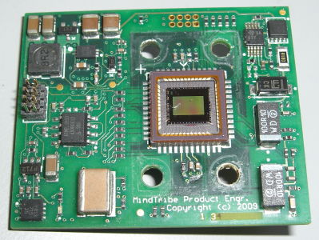
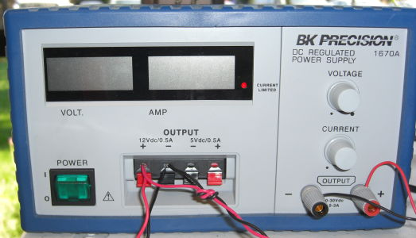
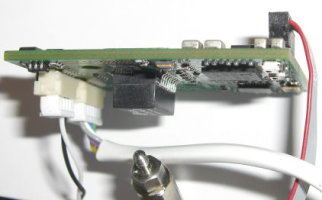
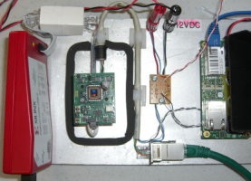
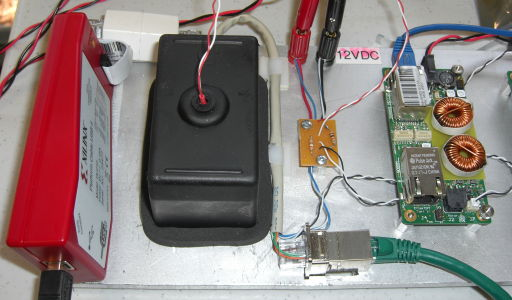
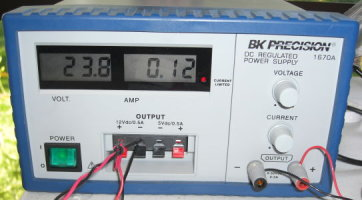

| 1. Make sure you are testing the correct board.  | 2. Turn off the power supply.  |
| 3. Plug in the Ethernet/Power, Trigger and JTAG
connectors.  |
4. Place the camera on the test bench with the
sensor facing up.  |
| 5. Close the cover over the camera.  |
6. Turn on the power supply.  |